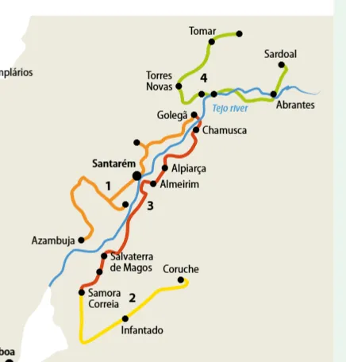
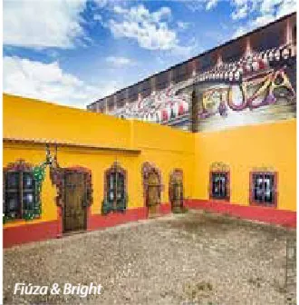
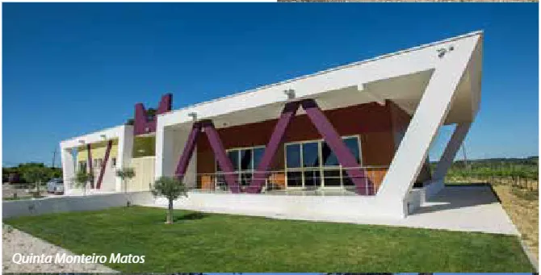
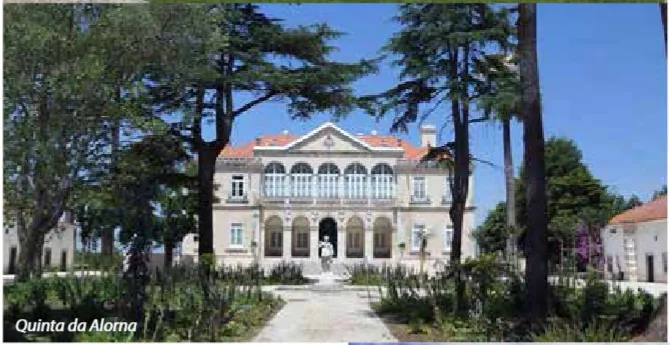

Kapitel 4 · Die portugiesischen Weinregionen
Weinregion Tejo
Kennzahlen (2022)
Rebfläche: 12.847 ha
Gesamterzeugung: 68.600.000 Liter
Durchschnittsertrag: 7.070 Liter/ha
Zertifizierte Weintypen: 83 %
Geschichte
Zur Geschichte des Weinbaus am Tejo gehören Belege für die Anwesenheit von Phöniziern und Römern. Urkunden der Könige der alfonsinischen Dynastie dokumentieren ihn seit der Reconquista. Bis zum Ende der ersten Hälfte des 13. Jahrhunderts wurden rund 30.000 Pipas Wein nach England exportiert. In der Neuzeit wuchs die Bevölkerung der am stärksten mit Rebbau und Weinerzeugung verbundenen Gemeinden (Almeirim, Alpiarça, Cartaxo, Chamusca, Coruche, Rio Maior, Salvaterra de Magos und Santarém) durch den Weinbau drastisch. Die VQPRD-Regionen wurden 1989 geschaffen. Diese im Zentrum Portugals gelegene Weinregion mit großer landwirtschaftlicher Nutzfläche entstand durch Abtrennung von der früheren Region Estremadura. 2008 wurde die Comissão Vitivinícola Regional do Tejo (Regionale Weinbaukommission Tejo) umbenannt und ihre Politik geändert. Derzeit sind 6 Unterregionen als DO eingestuft: Almeirim, Cartaxo, Chamusca, Coruche, Santarém und Tomar.
Terroir
Klima nach Köppen-Geiger:
Csb. Lässt sich als gemäßigt südmediterran beschreiben. Im Sommer ist es tagsüber heiß, nachts mäßig bis warm; im Winter werden Minustemperaturen gemessen. Feuchtgemäßigtes Klima mit sommerlicher Trockenzeit. Indizes des MCC-Systems (Tonietto & Carbonneau, 2004): heliothermischer Index (HI): +2, Kühle-Nacht-Index (CI): −1, Trockenheitsindex (DI): +1. Die Region erstreckt sich von der Küste bis zu den Bergen Caramulo und Buçaco. Die ganze Region steht unter atlantischem Einfluss mit Meereswinden und hoher relativer Luftfeuchtigkeit, was ein hohes Risiko für Pilzinfektionen mit sich bringt. Zu Frühlingsbeginn gibt es Fröste, ungünstige Bedingungen für den Ansatz der Blütenstände und im Mai Hagelgefahr.
Niederschlag: 500–600 mm, beschränkt auf Winter und Frühjahr.
Geologie/Bodenkunde: Die wichtigste orografische Erhebung ist die Serra de Aire e Candeeiros, begrenzt durch den mittleren Tejo und die Tejo-Auen. Die Böden dieser Weinregion werden durch die Nähe zum Tejo bestimmt. Die Region hat drei unterschiedliche Erzeugungszonen: Campo, Bairro und Charneca. Sehr ertragreiche Ackerböden für intensive Landwirtschaft, einschließlich Weinbau, finden sich auf den Schwemmlandböden (Campo) der weiten Ebenen am Tejo, auch Tejo-Auen genannt. Der Bairro zwischen Tejotal und den Ausläufern der Massive Porto de Mós, Candeeiros und Montejunto hat Ton-Kalk-Böden in sanft welligem Gelände. Die Charneca liegt südlich des Campo am linken Tejoufer; mit mäßig fruchtbaren Sandböden liegen ihre Erträge unter dem regionalen Durchschnitt.
Höhe der Weinberge: 10–100 Meter.
Erzeugte Weintypen
IG-Weine Tejo bzw. Landweine Tejo: Rot, Weiß, Rosé, Perlwein, leichter Wein.
DO-Tejo-Weine (VQPRD); die Namen folgender Unterregionen dürfen verwendet werden: Almeirim, Cartaxo, Chamusca, Coruche, Santarém und Tomar: Rot, Rosé, Weiß.
DO-Tejo-Schaumweine (VEQPRD)
DO-Tejo-Likörweine (VLQPRD)
Aguardente de Vinho (Weinbrand)
Vinagre de Vinho (Weinessig)
Regionale Kontakte
Technische Informationen: Comissão Vitivinícola Regional do Tejo, S. Pedro – Apartado 393, 2001-905 Santarém – Tel.: 243 309 400, Fax: 243 309 409
Kulturelle Informationen zum Wein der Region: Colegiada dos Enófilos de S. Vicente (Kollegium der Weinfreunde von São Vicente), Avenida Almirante Reis 58 – r/c Dtº; Museu Rural e do Vinho do Concelho do Cartaxo (Land- und Weinmuseum der Gemeinde Cartaxo), Avenida 25 de Abril, Quinta das Pratas, 2070-000 Cartaxo; www.cm-cartaxo.pt
Hochschulen und Weinbauforschung: Escola Superior Agrária de Santarém (ESAS), Quinta do Galinheiro – S. Pedro – Apartado 310, 2001-904 Santarém; www.esa.ipsantarem.pt
Zertifizierungsstelle: Comissão Vitivinícola Regional do Tejo, S. Pedro – Apartado 393, 2001-905 Santarém – Tel.: 243 309 400, Fax: 243 309 409 –
Website: www.cvrtejo.pt, E-Mail: geral@cvrtejo.pt
Weintourismus: Rota dos Vinhos do Tejo (Tejo-Weinroute), Campo Infante da Câmara – Casa do Campino, 2000-014 Santarém; Tel.: 243 330 330; http://www.rotavinhooeste.com; www.rotadovinhoribatejo.pt

Weinbauregion DO Tejo – Unterregionen
Unterregion Santarém · Unterregion Almeirim · Unterregion Coruche · Unterregion Chamusca

Route 1 – Gotischer Schatz · Route 2 – Stiere und Pferde · Route 3 – Beira Tejo · Route 4 – Manuelinischer Schatz | Templerburgen
Informationen zu Erzeugern und Abfüllern:
http://www.ivv.min-agricultura.pt/np4/1736.html, Jahrbuch 2011, S. 214–216; www.viniportugal.pt
Botanik (Biodiversität) und zugelassene Sorten
Rechtsgrundlage: Ministerialerlass Nr. 226/2014 vom 6. November und Gesetzesdekret Nr. 212/2004 vom 23. August.
Rotweine: Alfrocheiro (Tinta Bastardinha), Alicante Bouschet, Alvarelhão (Brancelho), Amaral, Aragonez (Tinta Roriz, Tempranillo), Baga, Barreto, Bastardo (Graciosa), Cabernet Franc, Cabernet Sauvignon, Caladoc, Camarate, Carignan, Carmenère, Castelão, Cinsault, Cornifesto, Corropio, Cot (Malbec), Dolcetto, Dornfelder, Durif (Petite Syrah), Esgana Cão Tinto, Espadeiro, Galego, Gamay, Grand Noir, Grenache, Jaen (Mencía), Labrusco, Lemberger (Blaufränkisch), Marselan, Marufo (Mourisco Roxo), Merlot, Monvedro, Moreto, Moscatel Galego Tinto, Mourisco, Nebbiolo, Negra Mole, Nero, Nero d’Avola, Parreira Matias, Petit Bouschet, Petit Verdot, Pinot Noir, Português Azul (Blauer Portugieser), Preto Martinho, Ramisco, Rufete (Tinta Pinheira), Sangiovese, Sezão, Syrah (Shiraz), Tannat, Teinturier, Tinta Barroca, Tinta Caiada (Pau Ferro, Tinta Lameira), Tinta Carvalha, Tinta da Barca, Tinta Francisca, Tinta Gorda, Tinta Grossa (Carrega Tinto), Tinta Miúda, Tinta Negra (Molar, Saborinho), Tinta Pomar, Tintinha, Tinto Cão, Tinto Pegões, Touriga Fêmea, Touriga Franca, Touriga Nacional, Trincadeira (Tinta Amarela, Trincadeira Preta), Verdelho Tinto, Verdial Tinto, Vinhão (Sousão), Zinfandel, Arinto Roxo, Bastardo Roxo, Chasselas Roxo, Donzelinho Roxo, Fernão Pires Rosado, Galego Rosado, Gewürztraminer, Gouveio Roxo, Malvasia Cândida Roxa, Malvasia Fina Roxa, Malvasia Preta Roxa (Pinheira Roxa), Moscatel Galego Roxo, Pinot Gris (Pinot Grigio) und Verdelho Roxo.
Kartenbeschriftung: Açores · Portugal continental · Graciosa · Pico · Terceira · Madeira · Porto Santo

Weißweine: Alicante Branco, Alvarinho, Antão Vaz, Arinto (Pedernã), Assaraky, Avesso, Azal, Bical (Borrado das Moscas), Boal Branco, Boal Espinho, Cerceal Branco, Cercial, Chardonnay, Chenin, Códega do Larinho, Colombard (Semilão), Donzelinho Branco, Encruzado, Fernão Pires (Maria Gomes), Folha de Figueira (Dona Branca), Fonte Cal, Galego Dourado, Gouveio, Greco (Greco di Tufo), Grüner Veltliner, Jampal, Loureiro, Malvasia, Malvasia Branca, Malvasia Cândida, Malvasia Fina, Malvasia Rei, Manteúdo, Marquinhas, Marsanne, Moscadet, Moscatel Galego Branco, Moscatel Graúdo, Mourisco Branco, Müller-Thurgau, Perrum, Petit Manseng, Pinot Blanc, Pintosa, Rabigato, Rabo de Ovelha, Ratinho, Riesling, Rotgipfler, Roussanne, Sauvignon (Sauvignon Blanc), Seara Nova, Semillon, Sercial (Esgana Cão), Sercialinho, Síria (Roupeiro, Códega), Tália (Ugni Blanc, Trebbiano Toscano), Tamarez (Molinha), Terrantez, Terrantez do Pico, Trajadura (Treixadura), Trincadeira das Pratas, Verdejo, Verdelho, Viognier, Viosinho und Vital.



Renommierte Weingüter
in der Region:
Der Tejo hat die besten Ackerböden Portugals. Früher wurden viele Weinberge auf den reichen Böden in Flächen für andere Kulturen umgewandelt. Inzwischen sind auf Kalk- und Sandböden moderne, qualitätsorientierte Weinberge entstanden. Quinta Monteiro de Matos, Santarém.
Quinta do Casal Branco, Almeirim.
Adega do Cartaxo, Cartaxo. Adega Cooperativa de Almeirim, Almeirim.
Quinta da Badula, Rio Maior.
Companhia das Lezírias, Benavente.
Pinhal da Torre, Alpiarça.
Quinta da Alorna – Vinhos, Almeirim.
Casa Cadaval, Salvaterra de Magos.
Fiúza & Bright, Almeirim.
Quinta da Lapa, Azambuja; Quinta da Lagoalva de Cima, 2090-222 Alpiarça; Falua.